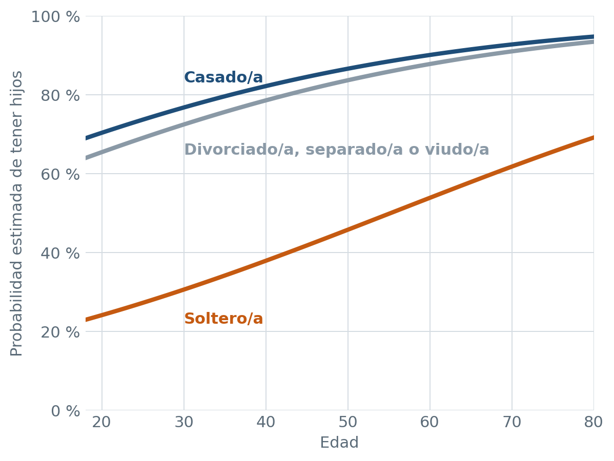
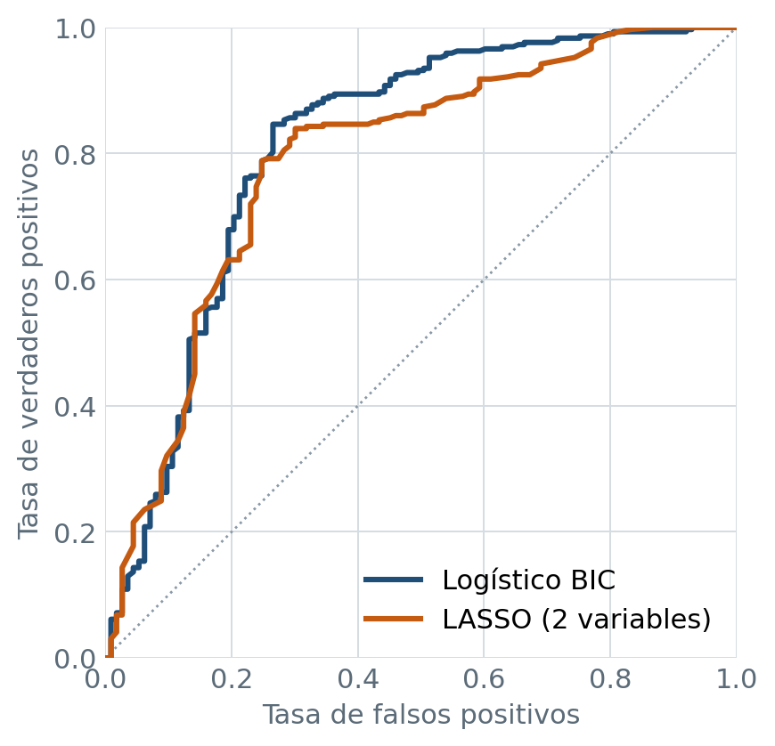

Qué predice que una persona tenga hijos
Un modelo de clasificación que estima la probabilidad de tener hijos a partir del perfil sociodemográfico de 2,035 personas encuestadas en Estados Unidos. Combina regresión logística, selección de variables y regularización, y el análisis completo se replicó de R a Python.
- AUC = 0.81 en datos no vistos
- 9 parámetros de 34 posibles
- R y Python con resultados idénticos

Qué pesa en la probabilidad de tener hijos
Manteniendo constantes las demás variables, el modelo cuantifica el efecto de cada característica sobre las odds de tener hijos (la probabilidad de tenerlos dividida entre la de no tenerlos):
- −89 %
- de odds para una persona soltera frente a una casada: el estado civil es, con diferencia, el factor dominante.
- × 1.42
- se multiplican las odds por cada diez años adicionales de edad.
- −50 %
- de odds para los hombres frente a las mujeres, que declaran tener hijos con más frecuencia.
Odds ratios del modelo logístico seleccionado por BIC. La raza y la clase social completan el modelo; la felicidad, la política, la región y el signo del zodiaco no aportan información.
Cuatro modelos, una elección por parsimonia
Seis combinaciones de stepwise, forward y backward con AIC y BIC convergieron en solo dos modelos. Se compararon con validación cruzada repetida (5 folds × 20 repeticiones), frente a un modelo de referencia de tres variables y a un LASSO ajustado por validación cruzada, y luego se evaluaron en un 20 % de datos reservado.
| Modelo | Parámetros | AUC | Kappa | Sensibilidad | Especificidad |
|---|---|---|---|---|---|
| Referencia: estado civil, edad y raza | 6 | 0.799 | 0.516 | 83.6 % | 69.9 % |
| Logístico BIC Recomendado | 9 | 0.813 | 0.535 | 82.9 % | 73.5 % |
| Logístico AIC | 19 | 0.816 | 0.544 | 81.6 % | 77.0 % |
| LASSO: solo estado civil y edad | 3 | 0.789 | 0.503 | 84.3 % | 67.3 % |

Métricas en el conjunto de prueba, con umbral de clasificación igual a la prevalencia (0.72). El modelo AIC añade 10 parámetros para ganar 0.003 de AUC, una diferencia muy inferior a la variabilidad entre remuestreos; por eso se elige el modelo BIC. El signo del zodiaco, incluido como control, no fue seleccionado por ningún método.
Cómo se hizo
El análisis sigue el flujo completo de un proyecto de clasificación.
Exploración
Perfil de las 2,035 personas y detección del desbalance de clases (72 % con hijos).
Selección de variables
Stepwise, forward y backward con AIC y BIC sobre 12 predictores.
Validación cruzada
5 folds × 20 repeticiones: 100 estimaciones de AUC, Kappa y accuracy por modelo.
Interpretación
ANOVA de tipo II y odds ratios con intervalos de confianza al 95 %.
Regularización
LASSO, Ridge y Elastic Net, con búsqueda conjunta de α y λ y la regla 1-SE.
Evaluación en prueba
Matriz de confusión, sensibilidad, especificidad y curvas ROC con umbral ajustado.